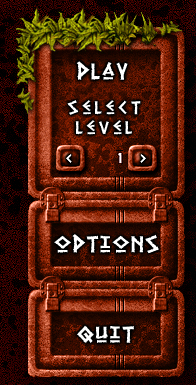

|  | Click on PLAY to start a new game.
Completed levels can be accessed directly, just by selecting them with the 2 arrows. ( Allowing you to continue where you left the game ) The OPTIONS button will take you to the option screen where you can adjust volumes and reset the scores. The QUIT button will quit the game. |
( Left will turn the volume down, right will turn it up ) Clicking on RESET SCORES will reset the saved scores and restore the maximum accessible level to 1. The BACK button will take you back to the intro screen.

You can set the music and sound effects volumes by clicking on the left and right arrows.